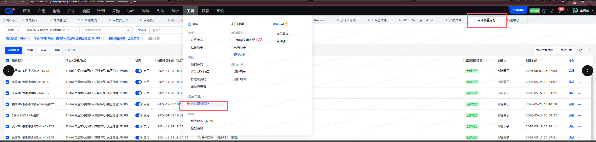
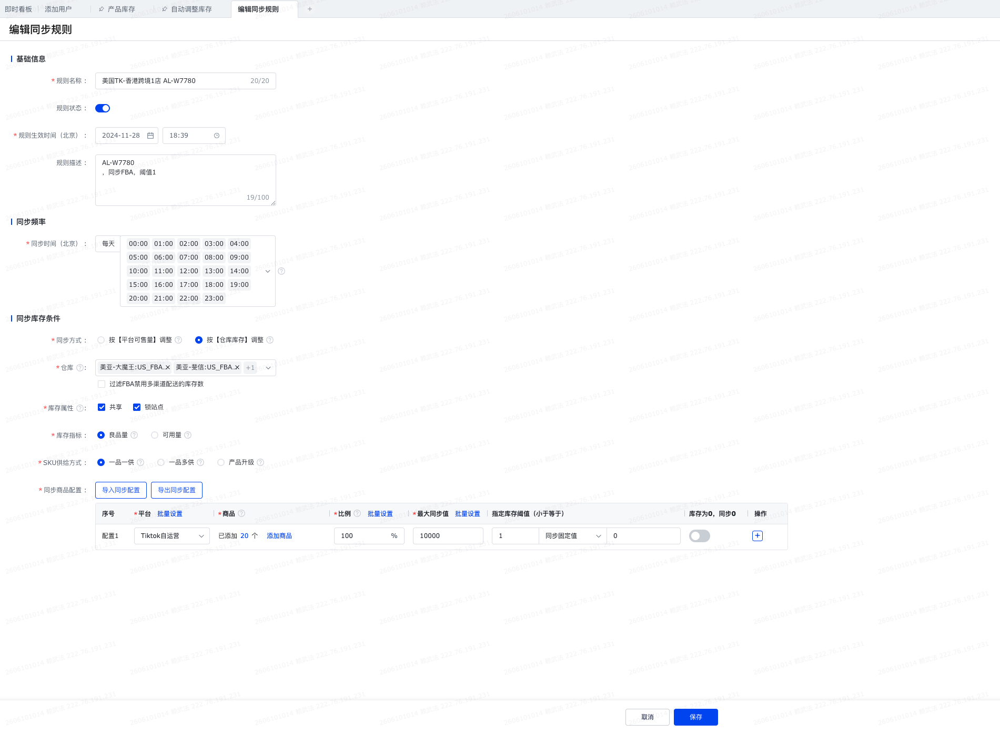

本版需求文档按最新资料重写：字段来源以6月4日-思唯修改的映射表.xlsx为准，页面功能与展示以htmls/库存检查看板-1.0.html为准；正文仅保留当前页面需要的字段、交互和验收口径。
建设 TK库存检查 看板，用于核对 TikTok 商品、积加库存、店铺侧已同步库存与库存阀值配置之间的差异，支持运营快速定位库存同步异常、少同步与超卖风险。
数据源以 Excel 的 源数据路径 与 映射表 Sheet 为准。当前页面主要依赖以下来源：
| 数据源 | 步骤 | 取数路径 / 筛选口径 | 确认状态 / 备注 |
|---|---|---|---|
| TIKTOK-在线商品 | 1， | 积加-》销售-》商品管理-》Tiktok自运营-》筛选店铺-》筛选在售 店铺： 美国TK-艾斯特尼-美区跨境1店 美国TK-艾斯特尼-美区跨境2店 美国TK-艾斯特尼-美区跨境3店 美国TK-艾斯特尼-英国直邮店:GB 美国TK独立站-shopify:Global 美国TK-艾斯特尼-欧洲直邮店:IT 美国TK-艾斯特尼-欧洲直邮店:FR 美国TK-艾斯特尼-欧洲直邮店:ES 美国TK-艾斯特尼-欧洲直邮店:DE | OK |
| TIKTOK-在线商品 | 2， | 导出-》导出查询结果 | |
| 站点产品库存-自定义导出 | 1， | 积加-》仓库-》产品库存-》站点产品库存》筛选仓库-》筛选共享 仓库： 美区： 美国TK-国内厦门仓 万邑通:USKY3_Warehouse 万邑通:USWC2_Warehouse 万邑通:USWC_Warehouse 美国TK-艾斯特尼-美国谷仓:美西仓库 美国TK-厦门直邮仓 英区： 美国TK-国内厦门仓 美国TK-厦门直邮仓 美国TK-艾斯特尼-英国退件仓:英国仓 万邑通:UKTW Warehouse | |
| 站点产品库存-自定义导出 | 2， | 导出-》自定义导出 | |
| TikTok.FBT库存-自定义导出 | 1， | 积加-》仓库-》平台仓库存-》TikTok自运营》筛选仓库为美国TK-艾斯特尼-美区跨境1店:US_FBT-》筛选同步状态为正常 | |
| TikTok.FBT库存-自定义导出 | 2， | 导出-》自定义导出 | |
| 积加-商品管理-可用库存 | 积加-》仓库-》产品库存-》站点产品库存》筛选仓库-》筛选共享-》库存数量 | 这个地方是用RPA实现吗？积加无法导出（跟武法确认是用API实现） 但是TIKTOK店铺后台导出是有仓库的 另外这个仓库会随着FBT的占比增加新增仓库出来，需要确认识别增加和归类到FBT | |
| 库存阀值设置 | 1， | 积加后台-自动调整库存功能-库存阀值设置；按 SKU / 店铺维护库存差异判断阀值，用于区分阀值同步异常、少同步异常和超卖风险异常。 | 参考截图：ScreenShot_2026-06-10_101356_730.png、ScreenShot_2026-06-10_101628_205.png |
库存阀值设置用于异常判断中的 库存阀值设置 字段，是判断阀值同步异常、少同步异常和超卖风险异常的重要来源。


| 筛选项 | 说明 |
|---|---|
| 站点 | 原型保留站点筛选；列表不展示站点列。 |
| 店铺 | 支持按店铺筛选；列表展示店铺列。 |
| 异常状态 | 全部、阀值同步异常、少同步、超卖风险等固定枚举；异常卡片点击时复用该筛选。 |
| 搜索 | 支持按 PID、SKU、SPU 进行模糊或精确搜索；精确搜索支持多值输入。 |
| 栏目 | 卡片 | 交互 |
|---|---|---|
| PID&SKU维度 | SKU总数、海外在库总库存、海外在途总库存、国内总库存、阀值同步异常数、少同步异常数、超卖风险异常数 | 异常类卡片点击后刷新 PID&SKU 列表筛选结果。 |
| SPU维度 | SPU总数、海外在库总库存、海外在途总库存、国内总库存、阀值同步异常数、少同步异常数、超卖风险异常数 | 异常类卡片点击后刷新 SPU 列表筛选结果。 |
PID&SKU 维度用于展示最细库存检查明细，商品基础信息包含店铺、SPU、SPU名称、PID、MSKU、SKU ID、库存SKU、库存SKU名称；其他库存模块按最新原型分组展示。
产品基本信息总库存国内库存海外在途总量海外在库库存店铺应该被同步的库存店铺实际被同步库存的情况库存差异异常判断
| 模块 | 字段名 | 字段说明 | 源数据表 / 位置 | 源字段 | 条件 / 需求公式 |
|---|---|---|---|---|---|
| 产品基本信息 | 店铺 | — | TIKTOK-在线商品 | 店铺 | — |
| 产品基本信息 | SPU | — | TIKTOK-在线商品 | SPU | — |
| 产品基本信息 | SPU名称 | — | TIKTOK-在线商品 | 父产品名称 | — |
| 产品基本信息 | PID | — | TIKTOK-在线商品 | PID | — |
| 产品基本信息 | MSKU | — | TIKTOK-在线商品 | msku | — |
| 产品基本信息 | SKU ID | — | TIKTOK-在线商品 | ItemID | — |
| 产品基本信息 | 库存SKU | — | TIKTOK-在线商品 | SKU | — |
| 产品基本信息 | 库存SKU名称 | — | TIKTOK-在线商品 | 产品名称 | — |
| 总库存 | 总库存 | — | 计算字段 / 聚合字段 | — | 总库存=总国内库存+总海外在途库存+海外在库总库存 |
| 总库存 | 总在途库存 | — | 计算字段 / 聚合字段 | — | 总在途库存=（国内库存-国内在库库存）+海外在途总量 |
| 总库存 | 总可用库存 | — | 计算字段 / 聚合字段 | — | 总可用库存=国内在库库存+海外在库总库存 |
| 国内库存 | 总国内库存 | — | 计算字段 / 聚合字段 | — | 总国内库存=采购在途库存+工厂采购未交国内交货在途库存+国内在库库存 |
| 国内库存 | 采购在途库存 | — | 计算字段 / 聚合字段 | — | 筛选仓库为美国TK-厦门直邮仓和美国TK-国内厦门仓 采购在途=采购量+在途量 |
| 国内库存 | 工厂采购未交量 | 采购量（剩余未交量） = 采购量 - 实交量 代表工厂还没交货的数量 举例采购单1000件，采购已经创建交货单900件，这里的数量就会是1000-900=100件 | 站点产品库存-自定义导出 | 采购量 | 筛选仓库为美国TK-厦门直邮仓和美国TK-国内厦门仓 |
| 国内库存 | 国内交货在途库存 | 积加产品库存-站点库存，筛选国内仓库 | 站点产品库存-自定义导出 | 在途量 | 筛选仓库为美国TK-厦门直邮仓和美国TK-国内厦门仓 |
| 国内库存 | 国内在库库存 | — | 站点产品库存-自定义导出 | 可用量 | 筛选仓库为美国TK-厦门直邮仓和美国TK-国内厦门仓 可用量 |
| 海外在途总量 | 海外在途总量 | — | 计算字段 / 聚合字段 | — | 海外在途总量=三方仓在途量+万邑通USKY3在途+万邑通USWC2在途+万邑通USWC在途+美国谷仓:美西仓库在途+FBT在途量+英国退货仓 |
| 海外在途总量 | 三方仓在途量 | — | 站点产品库存-自定义导出 | 调拨待出库+调拨待出运+在途量 | 筛选仓库为万邑通:USKY3_Warehouse 万邑通:USWC2_Warehouse 万邑通:USWC_Warehouse 美国TK-艾斯特尼-美国谷仓:美西仓库 |
| 海外在途总量 | 万邑通USKY3在途 | — | 计算字段 / 聚合字段 | 调拨待出库+调拨待出运+在途量 | 筛选仓库为万邑通:USKY3_Warehouse |
| 海外在途总量 | 万邑通USWC2在途 | — | 计算字段 / 聚合字段 | 调拨待出库+调拨待出运+在途量 | 筛选仓库为万邑通::USWC2_Warehouse |
| 海外在途总量 | 万邑通USWC在途 | — | 计算字段 / 聚合字段 | 调拨待出库+调拨待出运+在途量 | 筛选仓库为万邑通:USWC_Warehouse |
| 海外在途总量 | 美国谷仓:美西仓库在途 | — | 计算字段 / 聚合字段 | 调拨待出库+调拨待出运+在途量 | 筛选仓库为美国TK-艾斯特尼-美国谷仓:美西仓库 |
| 海外在途总量 | FBT在途量 | — | 积加-平台仓库存导出 | — | — |
| 海外在途总量 | 英国退货仓在途量 | — | 计算字段 / 聚合字段 | 调拨待出库+调拨待出运+在途量 | — |
| 海外在库库存 | 海外在库总库存 | — | 计算字段 / 聚合字段 | — | 美国站点： =谷仓-1加万邑通USKY3-1加万邑通USWC-1加万邑通USWC2-1加国内仓-1加FBT-1（接口能不能抓到？）加FBA(空着)-1 英国站点： =国内仓-1加英国退货仓-1 |
| 海外在库库存 | 积加-万邑通USKY3 | — | 站点产品库存-自定义导出 | 可用量 | 筛选仓库为万邑通:USKY3_Warehouse |
| 海外在库库存 | 积加-万邑通USWC2 | — | 站点产品库存-自定义导出 | 可用量 | 筛选仓库为万邑通:USWC2_Warehouse |
| 海外在库库存 | 积加-万邑通USWC | — | 站点产品库存-自定义导出 | 可用量 | 筛选仓库为万邑通:USWC_Warehouse |
| 海外在库库存 | 积加-谷仓美西仓库 | — | 站点产品库存-自定义导出 | 可用量 | 筛选仓库为美国TK-艾斯特尼-美国谷仓:美西仓库 |
| 海外在库库存 | 积加-FBA仓库 | — | 计算字段 / 聚合字段 | — | — |
| 海外在库库存 | 积加-FBT可用 | — | 积加-平台仓库存导出 | 可用量 | — |
| 海外在库库存 | 三方仓可用量 | — | 计算字段 / 聚合字段 | — | — |
| 海外在库库存 | 积加-英国退货仓 | — | 站点产品库存-自定义导出 | 可用量 | 筛选仓库为万邑通:UKTW Warehouse和美国TK-艾斯特尼-英国退件仓:英国仓 |
| 店铺应该被同步的库存 | 店铺应该被同步的库存 | — | 计算字段 / 聚合字段 | — | 店铺应该被同步的库存=国内在库E15+海外在库E28 |
| 店铺实际被同步库存的情况 | 店铺侧被同步的总库存 | — | 计算字段 / 聚合字段 | — | 店铺侧被同步的总库存=在线商品库存数量下可用数量下浮所有仓库的总和（以下几个仓是我从店铺后台导出的所有仓，未来可能要增加，这个部分需要讨论 |
| 店铺实际被同步库存的情况 | 店铺侧-美国TK厦门直邮仓 | — | 积加-商品管理-可用库存 | =DISPIMG("ID_95D94D13274B41BFB46C6ABC66B5FAC2",1) | — |
| 店铺实际被同步库存的情况 | 店铺侧-万邑通USKY3 | — | 积加-商品管理-可用库存 | =DISPIMG("ID_95D94D13274B41BFB46C6ABC66B5FAC2",1) | — |
| 店铺实际被同步库存的情况 | 店铺侧-万邑通USWC2 | — | 积加-商品管理-可用库存 | =DISPIMG("ID_95D94D13274B41BFB46C6ABC66B5FAC2",1) | — |
| 店铺实际被同步库存的情况 | 店铺侧-万邑通USWC | — | 积加-商品管理-可用库存 | =DISPIMG("ID_95D94D13274B41BFB46C6ABC66B5FAC2",1) | — |
| 店铺实际被同步库存的情况 | 店铺侧-谷仓美西仓库 | — | 积加-商品管理-库存数量下-可用库存 | =DISPIMG("ID_95D94D13274B41BFB46C6ABC66B5FAC2",1) | — |
| 店铺实际被同步库存的情况 | 店铺侧-FBA仓库 | — | 积加-商品管理-可用库存 | =DISPIMG("ID_95D94D13274B41BFB46C6ABC66B5FAC2",1) | — |
| 店铺实际被同步库存的情况 | 店铺侧-FBT可用 | — | 计算字段 / 聚合字段 | =DISPIMG("ID_91B2AADA9AD2404C83746D7637731EF4",1) | — |
| 店铺实际被同步库存的情况 | 店铺侧-英国退货仓 | — | 积加-商品管理-可用库存 | =DISPIMG("ID_95D94D13274B41BFB46C6ABC66B5FAC2",1) | — |
| 库存差异 | 库存总差异=店铺后台库存-实际应该被同步 | — | 计算字段 / 聚合字段 | — | E38店铺侧被同步的总库存-E37店铺应该被同步的库存 |
| 库存差异 | 美国TK厦门直邮仓同步差异 | — | 计算字段 / 聚合字段 | — | E39店铺侧-美国TK厦门直邮仓-E19国内在库库存 |
| 库存差异 | 万邑通USKY3同步差异 | — | 计算字段 / 聚合字段 | — | E40店铺侧-万邑通USKY3-E29积加-万邑通USKY3 |
| 库存差异 | 万邑通USWC2同步差异 | — | 计算字段 / 聚合字段 | — | E41店铺侧-万邑通USWC2-E30积加-万邑通USWC2 |
| 库存差异 | 万邑通USWC同步差异 | — | 计算字段 / 聚合字段 | — | E42店铺侧-万邑通USWC-E31积加-万邑通USWC |
| 库存差异 | 谷仓美西仓同步差异 | — | 计算字段 / 聚合字段 | — | E43店铺侧-谷仓美西仓库-E32积加-谷仓美西仓库 |
| 库存差异 | FBA仓同步差异 | — | 计算字段 / 聚合字段 | — | E44店铺侧-FBA仓库-E33积加-FBA仓库 |
| 库存差异 | FBT同步差异 | — | 计算字段 / 聚合字段 | — | E45店铺侧-FBT可用-E34积加-FBT可用 |
| 库存差异 | 英国退货仓差异 | — | 计算字段 / 聚合字段 | — | E46店铺侧-店铺侧-英国退货仓-E34积加-E35积加-英国退货仓 |
| 异常判断 | 异常仓库 | — | 计算字段 / 聚合字段 | — | — |
| 异常判断 | 库存总差异=店铺后台库存数量-实际应该被同步数量 | — | 计算字段 / 聚合字段 | — | 库存总差异=店铺后台库存数量-实际应该被同步数量 |
| 异常判断 | 库存阀值设置 | 积加-自动调整库存功能-针对SKU维度设置的阀值，用来判断库存差值是属于阀值类型还是 | 调库存规则 | — | 调库存规则 |
| 异常判断 | 库存是否异常 | — | 计算字段 / 聚合字段 | — | 库存总差异不等于0的情况下标记异常 |
| 异常判断 | 异常类型 | — | 计算字段 / 聚合字段 | — | 0<库存总差异<=阀值，类型：阀值问题，提示：库存到达阀值，调整阀值or备货 库存总差异>阀值，类型：少同步，提示：库存同步数量少了，安排检查库存 库存总差异<0, 类型：超卖风险，提示：实际没那么多库存，可能超卖，立即检查 |
SPU 维度基于 PID&SKU 明细底表汇总生成。产品基本信息仅保留店铺、SPU、SPU名称；其他库存、同步、差异、异常模块与 PID&SKU 维度保持一致。
| 模块 | 字段名 | 字段说明 | 源数据表 / 位置 | 源字段 | 条件 / 需求公式 |
|---|---|---|---|---|---|
| 产品基本信息 | 店铺 | — | TIKTOK-在线商品 | 店铺 | — |
| 产品基本信息 | SPU | — | TIKTOK-在线商品 | SPU | — |
| 产品基本信息 | SPU名称 | — | TIKTOK-在线商品 | 父产品名称 | — |
| 总库存 | 总库存 | — | 计算字段 / 聚合字段 | — | 总库存=总国内库存+总海外在途库存+海外在库总库存 |
| 总库存 | 总在途库存 | — | 计算字段 / 聚合字段 | — | 总在途库存=（国内库存-国内在库库存）+海外在途总量 |
| 总库存 | 总可用库存 | — | 计算字段 / 聚合字段 | — | 总可用库存=国内在库库存+海外在库总库存 |
| 国内库存 | 总国内库存 | — | 计算字段 / 聚合字段 | — | 总国内库存=采购在途库存+工厂采购未交国内交货在途库存+国内在库库存 |
| 国内库存 | 采购在途库存 | — | 计算字段 / 聚合字段 | — | 筛选仓库为美国TK-厦门直邮仓和美国TK-国内厦门仓 采购在途=采购量+在途量 |
| 国内库存 | 工厂采购未交量 | 采购量（剩余未交量） = 采购量 - 实交量 代表工厂还没交货的数量 举例采购单1000件，采购已经创建交货单900件，这里的数量就会是1000-900=100件 | 站点产品库存-自定义导出 | 采购量 | 筛选仓库为美国TK-厦门直邮仓和美国TK-国内厦门仓 |
| 国内库存 | 国内交货在途库存 | 积加产品库存-站点库存，筛选国内仓库 | 站点产品库存-自定义导出 | 在途量 | 筛选仓库为美国TK-厦门直邮仓和美国TK-国内厦门仓 |
| 国内库存 | 国内在库库存 | — | 站点产品库存-自定义导出 | 可用量 | 筛选仓库为美国TK-厦门直邮仓和美国TK-国内厦门仓 可用量 |
| 海外在途总量 | 海外在途总量 | — | 计算字段 / 聚合字段 | — | 海外在途总量=三方仓在途量+万邑通USKY3在途+万邑通USWC2在途+万邑通USWC在途+美国谷仓:美西仓库在途+FBT在途量+英国退货仓 |
| 海外在途总量 | 三方仓在途量 | — | 站点产品库存-自定义导出 | 调拨待出库+调拨待出运+在途量 | 筛选仓库为万邑通:USKY3_Warehouse 万邑通:USWC2_Warehouse 万邑通:USWC_Warehouse 美国TK-艾斯特尼-美国谷仓:美西仓库 |
| 海外在途总量 | 万邑通USKY3在途 | — | 计算字段 / 聚合字段 | 调拨待出库+调拨待出运+在途量 | 筛选仓库为万邑通:USKY3_Warehouse |
| 海外在途总量 | 万邑通USWC2在途 | — | 计算字段 / 聚合字段 | 调拨待出库+调拨待出运+在途量 | 筛选仓库为万邑通::USWC2_Warehouse |
| 海外在途总量 | 万邑通USWC在途 | — | 计算字段 / 聚合字段 | 调拨待出库+调拨待出运+在途量 | 筛选仓库为万邑通:USWC_Warehouse |
| 海外在途总量 | 美国谷仓:美西仓库在途 | — | 计算字段 / 聚合字段 | 调拨待出库+调拨待出运+在途量 | 筛选仓库为美国TK-艾斯特尼-美国谷仓:美西仓库 |
| 海外在途总量 | FBT在途量 | — | 积加-平台仓库存导出 | — | — |
| 海外在途总量 | 英国退货仓在途量 | — | 计算字段 / 聚合字段 | 调拨待出库+调拨待出运+在途量 | — |
| 海外在库库存 | 海外在库总库存 | — | 计算字段 / 聚合字段 | — | 美国站点： =谷仓-1加万邑通USKY3-1加万邑通USWC-1加万邑通USWC2-1加国内仓-1加FBT-1（接口能不能抓到？）加FBA(空着)-1 英国站点： =国内仓-1加英国退货仓-1 |
| 海外在库库存 | 积加-万邑通USKY3 | — | 站点产品库存-自定义导出 | 可用量 | 筛选仓库为万邑通:USKY3_Warehouse |
| 海外在库库存 | 积加-万邑通USWC2 | — | 站点产品库存-自定义导出 | 可用量 | 筛选仓库为万邑通:USWC2_Warehouse |
| 海外在库库存 | 积加-万邑通USWC | — | 站点产品库存-自定义导出 | 可用量 | 筛选仓库为万邑通:USWC_Warehouse |
| 海外在库库存 | 积加-谷仓美西仓库 | — | 站点产品库存-自定义导出 | 可用量 | 筛选仓库为美国TK-艾斯特尼-美国谷仓:美西仓库 |
| 海外在库库存 | 积加-FBA仓库 | — | 计算字段 / 聚合字段 | — | — |
| 海外在库库存 | 积加-FBT可用 | — | 积加-平台仓库存导出 | 可用量 | — |
| 海外在库库存 | 三方仓可用量 | — | 计算字段 / 聚合字段 | — | — |
| 海外在库库存 | 积加-英国退货仓 | — | 站点产品库存-自定义导出 | 可用量 | 筛选仓库为万邑通:UKTW Warehouse和美国TK-艾斯特尼-英国退件仓:英国仓 |
| 店铺应该被同步的库存 | 店铺应该被同步的库存 | — | 计算字段 / 聚合字段 | — | 店铺应该被同步的库存=国内在库E15+海外在库E28 |
| 店铺实际被同步库存的情况 | 店铺侧被同步的总库存 | — | 计算字段 / 聚合字段 | — | 店铺侧被同步的总库存=在线商品库存数量下可用数量下浮所有仓库的总和（以下几个仓是我从店铺后台导出的所有仓，未来可能要增加，这个部分需要讨论 |
| 店铺实际被同步库存的情况 | 店铺侧-美国TK厦门直邮仓 | — | 积加-商品管理-可用库存 | =DISPIMG("ID_95D94D13274B41BFB46C6ABC66B5FAC2",1) | — |
| 店铺实际被同步库存的情况 | 店铺侧-万邑通USKY3 | — | 积加-商品管理-可用库存 | =DISPIMG("ID_95D94D13274B41BFB46C6ABC66B5FAC2",1) | — |
| 店铺实际被同步库存的情况 | 店铺侧-万邑通USWC2 | — | 积加-商品管理-可用库存 | =DISPIMG("ID_95D94D13274B41BFB46C6ABC66B5FAC2",1) | — |
| 店铺实际被同步库存的情况 | 店铺侧-万邑通USWC | — | 积加-商品管理-可用库存 | =DISPIMG("ID_95D94D13274B41BFB46C6ABC66B5FAC2",1) | — |
| 店铺实际被同步库存的情况 | 店铺侧-谷仓美西仓库 | — | 积加-商品管理-库存数量下-可用库存 | =DISPIMG("ID_95D94D13274B41BFB46C6ABC66B5FAC2",1) | — |
| 店铺实际被同步库存的情况 | 店铺侧-FBA仓库 | — | 积加-商品管理-可用库存 | =DISPIMG("ID_95D94D13274B41BFB46C6ABC66B5FAC2",1) | — |
| 店铺实际被同步库存的情况 | 店铺侧-FBT可用 | — | 计算字段 / 聚合字段 | =DISPIMG("ID_91B2AADA9AD2404C83746D7637731EF4",1) | — |
| 店铺实际被同步库存的情况 | 店铺侧-英国退货仓 | — | 积加-商品管理-可用库存 | =DISPIMG("ID_95D94D13274B41BFB46C6ABC66B5FAC2",1) | — |
| 库存差异 | 库存总差异=店铺后台库存-实际应该被同步 | — | 计算字段 / 聚合字段 | — | E38店铺侧被同步的总库存-E37店铺应该被同步的库存 |
| 库存差异 | 美国TK厦门直邮仓同步差异 | — | 计算字段 / 聚合字段 | — | E39店铺侧-美国TK厦门直邮仓-E19国内在库库存 |
| 库存差异 | 万邑通USKY3同步差异 | — | 计算字段 / 聚合字段 | — | E40店铺侧-万邑通USKY3-E29积加-万邑通USKY3 |
| 库存差异 | 万邑通USWC2同步差异 | — | 计算字段 / 聚合字段 | — | E41店铺侧-万邑通USWC2-E30积加-万邑通USWC2 |
| 库存差异 | 万邑通USWC同步差异 | — | 计算字段 / 聚合字段 | — | E42店铺侧-万邑通USWC-E31积加-万邑通USWC |
| 库存差异 | 谷仓美西仓同步差异 | — | 计算字段 / 聚合字段 | — | E43店铺侧-谷仓美西仓库-E32积加-谷仓美西仓库 |
| 库存差异 | FBA仓同步差异 | — | 计算字段 / 聚合字段 | — | E44店铺侧-FBA仓库-E33积加-FBA仓库 |
| 库存差异 | FBT同步差异 | — | 计算字段 / 聚合字段 | — | E45店铺侧-FBT可用-E34积加-FBT可用 |
| 库存差异 | 英国退货仓差异 | — | 计算字段 / 聚合字段 | — | E46店铺侧-店铺侧-英国退货仓-E34积加-E35积加-英国退货仓 |
| 异常判断 | 异常仓库 | — | 计算字段 / 聚合字段 | — | — |
| 异常判断 | 库存总差异=店铺后台库存数量-实际应该被同步数量 | — | 计算字段 / 聚合字段 | — | 库存总差异=店铺后台库存数量-实际应该被同步数量 |
| 异常判断 | 库存阀值设置 | 积加-自动调整库存功能-针对SKU维度设置的阀值，用来判断库存差值是属于阀值类型还是 | 调库存规则 | — | 调库存规则 |
| 异常判断 | 库存是否异常 | — | 计算字段 / 聚合字段 | — | 库存总差异不等于0的情况下标记异常 |
| 异常判断 | 异常类型 | — | 计算字段 / 聚合字段 | — | 0<库存总差异<=阀值，类型：阀值问题，提示：库存到达阀值，调整阀值or备货 库存总差异>阀值，类型：少同步，提示：库存同步数量少了，安排检查库存 库存总差异<0, 类型：超卖风险，提示：实际没那么多库存，可能超卖，立即检查 |
| 指标 | 计算口径 |
|---|---|
| 总库存 | 总国内库存 + 海外在途总量 + 海外在库总库存。 |
| 总在途库存 | 国内库存中非国内在库部分 + 海外在途总量。 |
| 总可用库存 | 国内在库库存 + 海外在库总库存。 |
| 总国内库存 | 采购在途库存 + 工厂采购未交量 + 国内交货在途库存 + 国内在库库存。 |
| 海外在途总量 | 三方仓在途量 + 万邑通 USKY3/USWC2/USWC 在途 + 谷仓美西仓库在途 + FBT 在途量 + 英国退货仓在途量。 |
| 店铺应该被同步的库存 | 国内在库库存 + 海外在库总库存。 |
| 店铺侧被同步的总库存 | 店铺后台商品管理库存数量下各仓可用库存汇总。 |
| 库存差异 | 店铺侧实际同步库存 - 应该被同步库存；仓库级差异按对应仓库逐一相减。 |
本需求文档仅描述最新原型中展示的字段。映射表中存在但页面不展示的字段，不作为本页面字段要求，也不进入列表、导出和字段说明接口。
| 异常类型 | 判断规则 | 前端表现 |
|---|---|---|
| 阀值同步异常 | 0 < 库存总差异 <= 库存阀值设置。 | 异常类型显示“阀值同步异常”，卡片统计计入阀值同步异常数。 |
| 少同步异常 | 库存总差异 > 库存阀值设置。 | 异常类型显示“少同步”，卡片统计计入少同步异常数。 |
| 超卖风险异常 | 库存总差异 < 0。 | 异常类型显示“超卖风险”，卡片统计计入超卖风险异常数。 |
| 正常 | 库存总差异 = 0 或未触发以上规则。 | 库存是否异常显示“否”。 |
异常仓库字段应列出发生仓库级差异的仓库名称；多个仓库可用逗号分隔。库存阀值设置来源于积加后台库存阀值设置 / 调库存规则。
库存检查看板-1.0.html 保持一致。6月4日-思唯修改的映射表.xlsx。